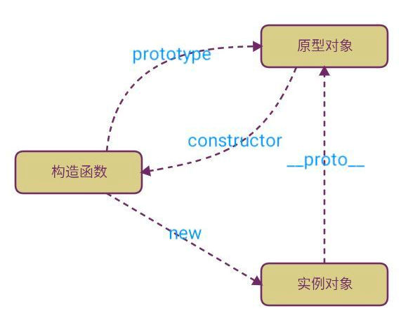

基本概论和关系

// 动物
function Animal(name) {
this.name = name;
}
// 给动物添加方法
Animal.prototype.getInfo = function () {
console.log('我的名字是:' + this.name);
};
// 猫
function Cat(name, age) {
this.age = age;
Animal.call(this, name);
}
// 设置猫的原型为动物
Cat.prototype = new Animal();
//恢复构造函数为猫
Cat.prototype.constuctor=Cat;
// 给猫添加方法
Cat.prototype.getAge = function () {
console.log('我的年龄是:' + this.age);
};
// 建立猫对象
var cat = new Cat('可爱的猫咪', 19);
cat.getInfo();
cat.getAge();
//建立动物对象
var animal = new Animal('动物');
animal.getInfo();
// animal.getAge();//animal.getAge is not a function